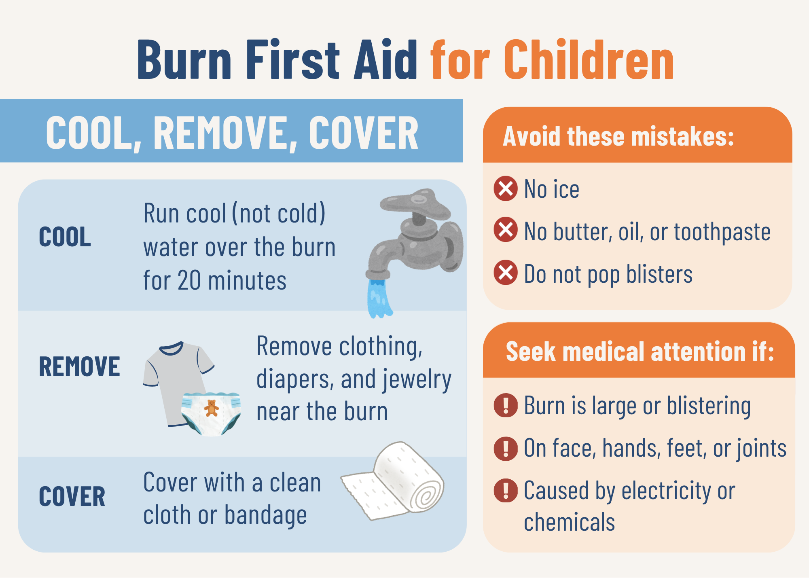

{kind=link}
Cool the burn
Use cool water while getting the right help for the situation.
Recovery Guide
Burn recovery can continue long after the wound closes. This guide brings together first-aid basics, recovery topics, trusted resources, and real experiences to help families know where to begin.
Quick guide
A burn injury can feel overwhelming in the moment. This quick guide summarizes basic first steps families can take while seeking appropriate medical care.

This information is for educational purposes only and is not a substitute for professional medical advice. For serious, large, electrical, chemical, or concerning burns, seek medical care immediately.
Use cool water while getting the right help for the situation.
Move nearby items away from the injured area when it is safe to do so.
Protect the area gently while seeking appropriate medical care.
Recovery timeline
Families may need quick first aid, emergency care, and reassurance.
Care teams may help with wound cleaning, dressings, pain management, and follow-up plans.
Families often adjust to bandage changes, appointments, school routines, and uncertainty.
Recovery may include scar care, movement, emotional adjustment, and returning to normal activities.
Some children continue follow-up care, scar treatments, or emotional healing months or years later.
Recovery topics
Learn about broad scar care topics families may discuss with a care team.
Learn moreExplore future information about laser treatment conversations and support.
Learn moreFind support for school routines, questions, and confidence.
Learn moreConnect with resources for confidence, feelings, and self-image.
Learn moreDiscover camp and peer-support opportunities for children and teens.
Learn moreFind reassurance and connection for caregivers navigating recovery too.
Learn moreLearn how therapy support may fit into a child’s broader recovery plan.
Learn moreExplore future guidance for protecting healing skin during everyday life.
Learn moreFind emotional support resources for children, parents, and families.
Learn moreConnect with survivor communities and supportive programs.
Learn moreEmotional recovery
Children and families may face questions, worries, or changes in confidence after a burn injury. Alongside medical care, emotional support, community, and shared experiences can play an important role in recovery.
Stories and support can help children feel less alone.
Parents may need reassurance, practical guidance, and connection too.
Recovery can affect siblings, routines, school, and daily life.
Stories
Survivor stories can help families understand that recovery looks different for everyone.
“Recovery does not end when the wound closes.”
Trusted resources
Placeholder link for national burn education and professional resources.
Visit resourcePlaceholder link for survivor support, education, and community programs.
Visit resourcePlaceholder link for burn center resources and regional support.
Visit resourcePlaceholder link for camps, peer support, and family programs.
Visit resourcePlaceholder link for finding nearby burn care and follow-up support.
Visit resourceBeyond the Burn is not a medical provider. Our goal is to help families find trusted information, lived experiences, and supportive resources.